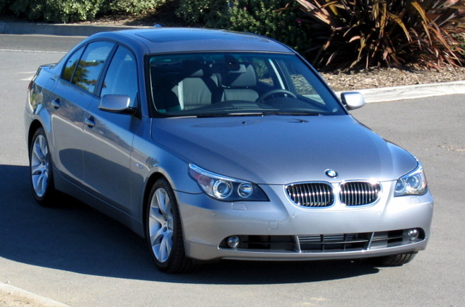
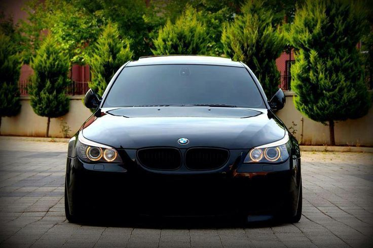
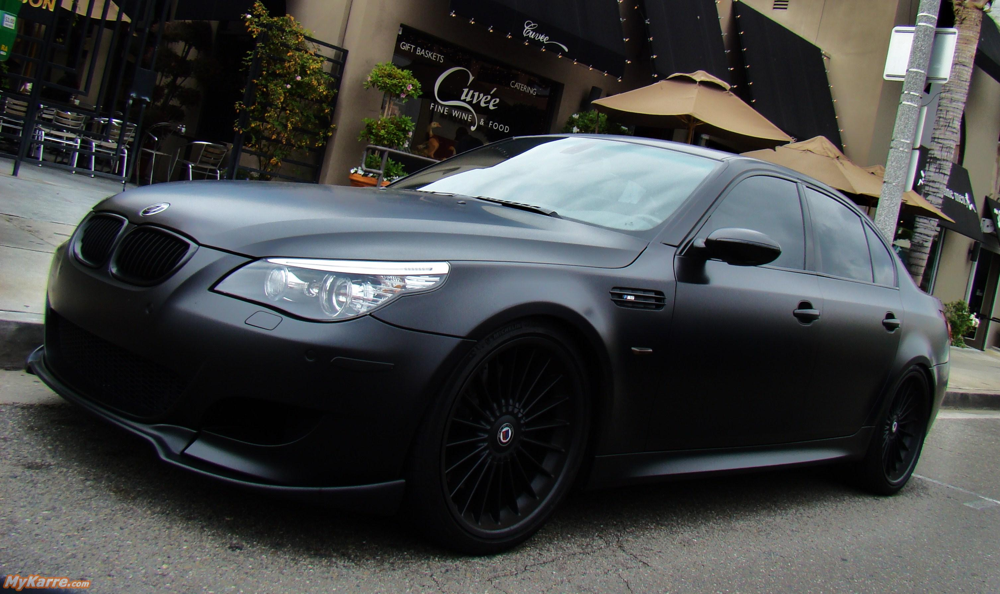

The BMW E60/E61 series is the fifth generation of the BMW 5 Series, which was sold from 2003 to 2010. The body styles of the range are:
The range was launched in 2003 in the sedan body style. In 2004, the estate body style was introduced. The E60/E61 was replaced by theF10/F11 5 Series in 2010.
The E60/E61 introduced various new electronic features to the 5 Series, including iDrive, head-up display, active cruise control, active steering and voice control. The E60/61 also was the first 5 Series to be available with a turbocharged petrol engine, a 6-speed automatic transmission and regenerative braking. New safety features for the E60/E61 included adaptive headlights, night vision, active headrests, Lane Departure Warning and high intensity emergency brake lights. Unlike the three previous generations of 5 Series[6][7] and the F10 successor,[8] the E60/E61 centre console is not angled towards the driver.
  Features available in the E60 initially included iDrive (first introduced in the E65 7 Series), active cruise control, voice control,[7] Bi-Xenon headlights, run-flat tyres, active width adjustment seats[6] and active steering.[10] Safety features include Dynamic Stability Control (DSC), head-up display,[12] adaptive headlights, night vision and active headrests.
Over the E60's lifespan, the following features were added: a simplified iDrive interface,[13] Active Cruise Control with Stop & Go,[14] LED rear lights,[15] Lane Departure Warning[7] and Brake Force Display.
Available transmissions are:
Petrol engines
| Models | Years | Engine | Power | Torque |
|---|---|---|---|---|
| 520i | 2007-2005 | N43B20OL | 125 kW (168 hp) @ 6700 rpm | 210 N·m (155 lb·ft) @ 4250 rpm |
| 523i | 2007-2010 | N43B20OL | 125 kW (168 hp) @ 6700 rpm | 210 N·m (155 lb·ft) @ 4250 rpm |
| 523i | 2005-2007 | N52B25 | 130 kW (174 hp) @ 5800 rpm | 230 N·m (170 lb·ft) @ 3500 rpm |
| 523i | 2007-2010 | N53B25UL | 140 kW (188 hp) @ 6100 rpm | 240 N·m (177 lb·ft) @ 3500 rpm |
2007 facelift
The LCI (Life Cycle impulse) model was released for the 2007 model year. This LCI model included a facelift of the front and rear end of the vehicle. This update included a new front bumper, fog lights, headlights, tail lights and trunk; however these styling changes are relatively subtle.[15] Interior changes included door handles, position of power window buttons and an updated iDrive with programmable "favourite" shortcut buttons (for late 2008 models).
The active cruise control was upgraded to bring the vehicle to a complete stop and accelerate from stationary (called" Stop & Go"). Other changes include adaptive headlights, LED rear lights, Lane Departure Warning,[12] night vision,[13] head-up display and Brake Force Display. The E60 LCI was the first BMW to feature regenerative braking.[14] On automatic transmission models, a shift by wire shifter replaced the mechanical version and shift paddles were available for the first time on a 5 Series model outside of the M5.[15] The LCI update also included new engines and transmissions.
| 1 | |||||||
| 2 | |||||||
| 3 | |||||||
| 4 | |||||||
| 5 | |||||||
| 6 | |||||||
| 7 | |||||||
| 8 | |||||||
| 1 | 2 | 3 | 4 | 5 | 6 | 7 | |